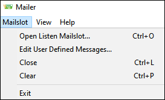

iTest User's Guide
The Mailer.exe is an executable used to send and receive commands and procedures in the form of mailslot messages, or it can be used as a debugging tool for testing purposes. Default mailslot messages are available within the executable and can be used to send messages throughout the iTest suite. Mailer.exe also supports the use of user-defined mailslot messages, which are defined within the executable.
To use the executable, open Mailer.exe, located in your $EXECUTEDIR. Mailer.exe will launch in a new window.
Mailer.exe
Use the table below to send and receive mailslot messages using Mailer.exe.
Mailer.exe
| Field | Description |
| Destination Mailslot | Used to determine the location to which the message will be sent. |
| Message | Used to define the message that will be sent. The Mailer tool does not support channel substitution (e.g., %<>%). It will pass these characters along, but it depends upon the destination to handle them. |
| Show User-Defined Messages Only | When checked, the default messages will not appear. |
| Send | Sends the mailslot message. |
| Listen Mailslot | The name of Mailer.exe's receiving mailslot. |
| Message | Lists received mailslot messages. |
| Sender | Lists the sender of the corresponding mailslot message. |
The Mailslot menu contains action items for managing and defining mailslot messages.
Mailslot Menu

Mailslot Actions
| Action | Description |
| Open Listen Mailslot | Allows you to define your listen mailslot location. |
| Edit User Defined Messages | Allows you to add or remove user-defined mailslot messages. |
| Close | Closes the listen mailslot. |
| Clear | Clears messages in Mailer.exe. |
Mailslot message reference lists are sorted by destination and can be accessed from the following documents: